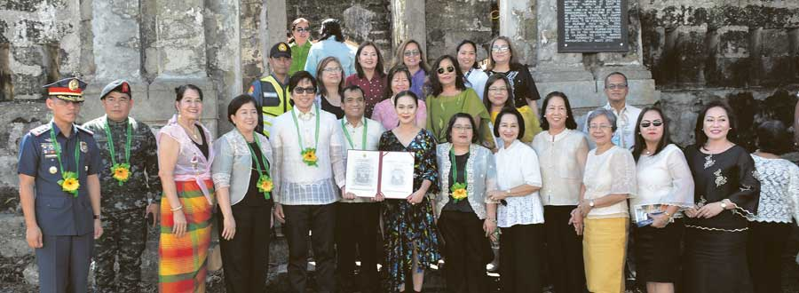

History
Mention Santa Rosa City of Laguna and people will readily point to a highly-developed, enviable city at par with the most modern cities in the world. But did you know that some 200 years ago, it was a laidback barrio dependent on agriculture called Barrio Burol (some say Barrio Bukol) of Biñan town?
The robust turnaround is rooted from the “pagsisikhay” (resoluteness and determination) of the Rosenians, as the people of Santa Rosa are called. Hence, the Sikhayan (Sikap-Kabuhayan) festival is celebrated every 18th of January in honor of the unwavering spirit of enterprise of the Rosenians which has fueled Santa Rosa’s unabated economic growth over the years.
Sikhayan coincides with the city’s founding as a separate and independent town of Laguna Province in 1792. This year the city celebrates its 227th founding anniversary.

{kind=link}
CAPTION: (Public Declaration of Cuartel de Santo Domingo as Important Cultural Property by the National Museum on January 14, 2019)
While most festivals have religious origins and entwine cultural and religious significance in traditional activities, Sikhayan is one celebration that is centered on its people.
As the city describes it, Sikhayan is a festival that honors the resilience and perseverance of the people because the greatest wealth of Santa Rosa is its human resource.
The city government resonates this belief by celebrating Sikhayan annually and re-tell the story about its hardworking people.
The early settlers are people who never gave up in the face of adversity, with a forward-looking mindset to a better future. From farm tillers and fisherfolks who grappled with scarcity in the past, many are now professionals and entrepreneurs in the fast-growing, highly-urbanized city.
More than the revelry, the festival is an active history engagement with the people who get to listen to stories about early town settlers: how they arrived in the then vast, barren town, the difficulties they encountered as tillers of the lands and how, with resolute conviction, they were able to build slowly a stable, sustainable and enviable modern city.
History-wise, this year’s Sikhayan festival also marks a very important cultural achievement for the Rosenians. This is the development of Cuartel de Santo Domingo as a tourism and heritage site of Santa Rosa.
Last January 14, 2019, the Cuartel de Santo Domingo was publicly declared as Important Cultural Property by the National Museum. This follows its declaration as National Historical Landmark in 2005 by the National Historical Institute, now known as National Historical Commission of the Philippines.
The cuartel is a small version of the Intramuros of Manila. It is an old Spanish bastion and has an area of 4,000-square meter. and located in Barangay Santo Domingo.
According to the blog of Sta. Rosa: An Intricate Picture of a Beautiful City, with the law of 1877 creating the Guardia Civil, the Cuartel was established in the 1880s. During that era, the real purpose of this cuartel is to guard or protect the town from the rebels in Silang, Cavite. This is also the reason why this two-story barracks was located in land between Sta. Rosa and Cavite.
In February 1897, during the Philippine revolution, the cuartel was used also as the headquarters, armory and depot for General Jose Lachambre’s division assigned to quell the rebellion in Silang and Dasmariñas in the Cavite highlands. The served as the headquarters and stronghold of the Guardia Civil, which protected the porous land boundaries between Silang, Cavite and Biñan/Calamba and Santa Rosa.
Today, the Kilusan Cuartel de Santo Domingo and the city government are spearheading the cuartel’s development. The stakeholders of the envisioned tourism and cultural heritage has had a series of meetings with the Philippine National Police (PNP), the Department of Environment and Natural Resources (DENR) and the National Historical Commission of the Philippines and inked an agreement to leave a 15-meter buffer zone to be developed by the local government unit as tourism heritage.